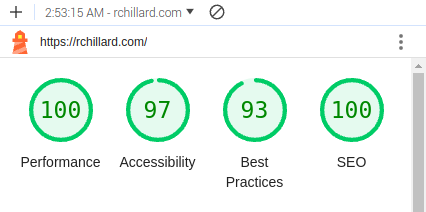

Over six years ago I returned to the world of web development and started this blog. I was so excited at the time, because I was just discovering the world of component-based frontend development and React.
I can still feel the enthusiasm in my first post, Need More Leather, from November 15, 2018, where I briefly go over the new technology I was excited about at the time like Node/NPM, React/JSX, CSS Modules, and GraphQL. I built that version of this blog using a static site generator called Gatsby: here's a full archived version of the original.
Over the last six years, I have made a lot of mistakes.
I've learned the terrible costs of overengineering and the consequences of chasing shiny objects.
The original code base for this blog (which had 2284 dependencies) has accumulated the following depressing statistics:
182 security issues
95 auto-generated pull requests to fix these issues
unable to be built or deployed
build command generates so many deprecation notices that Cloudflare gives up
Modern web development practices are broken.
It's time for something completely different.
It's time to rebuild this blog for sustainability.
Forward
Over the coming days and weeks, I will share what I have learned. I will also rebuild this blog using fundamental web technologies, modern methods, and no shiny objects.
I plan to use this opportunity to make observations about the state of the industry, and to share how overwrought, expensive, and unnecessary elements of the JavaScript ecosystem can be replaced with straightforward, sustainable approaches.
Here's this blog's to-do list:
Results
Initial Lighthouse Score
One goal of this blog is to improve its sustainability (for me, the developer), while also increasing its performance for readers. Here is the initial result (Lighthouse score) for the new homepage:

I'd say this new approach is off to a great start!